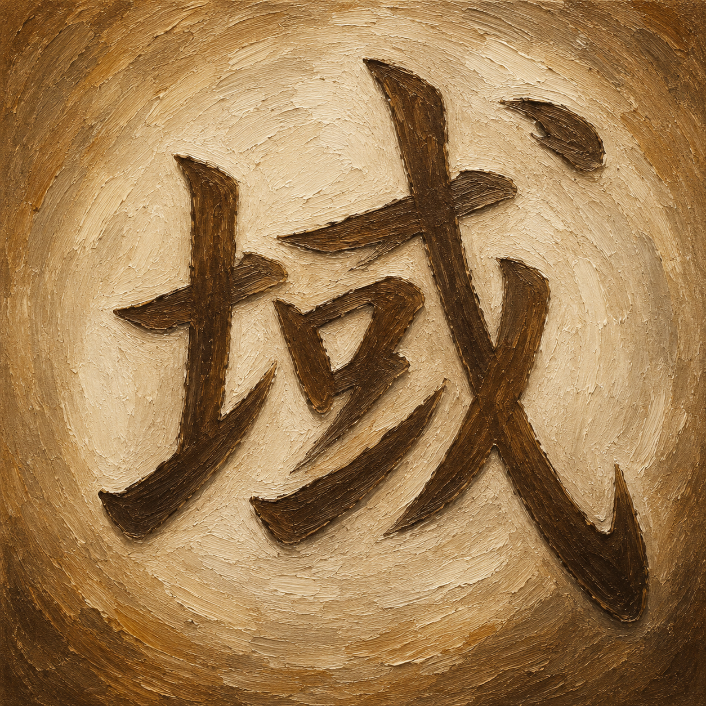
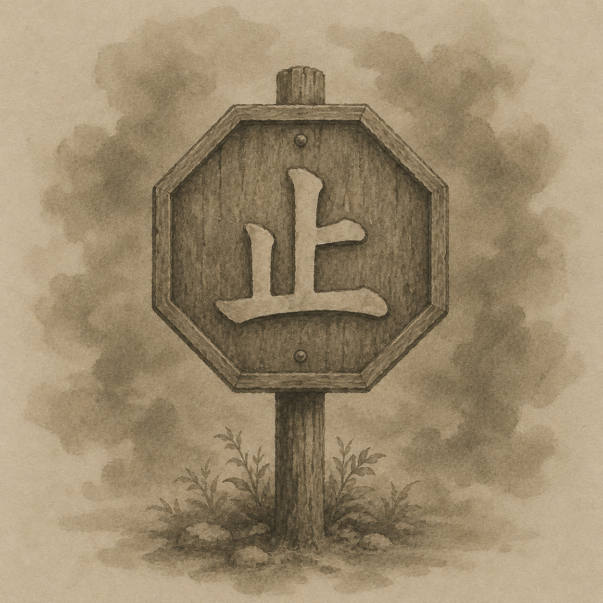
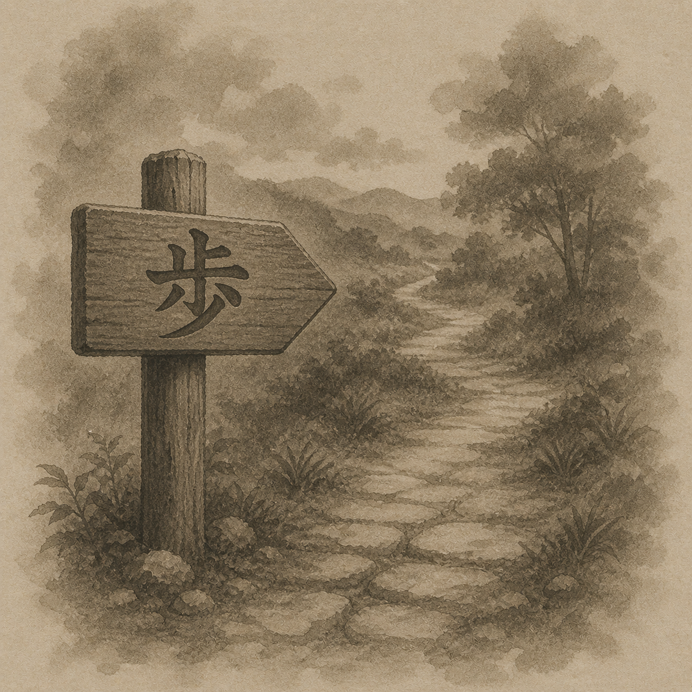

💡 Tip: Click the colored kanji to view stroke order animations

小さな境界の中にも、
人それぞれの世界がある。
域は静かに形を作る。
Even within a small boundary,
each person holds a world.
A range quietly gives shape.

夜の静けさを裂いて、
欲望だけが忍び込む。
盗まれるのは物だけではない。
Tearing through the night's silence,
only desire slips inside.
More than objects can be stolen.

土に触れる両手は、
未来を静かに植えている。
育つものは時を要する。
Hands touching the soil
quietly plant the future.
What grows requires time.

重みを運ぶ車輪は、
黙って道を進み続ける。
責任にも音がある。
The wheels bearing weight
continue silently down the road.
Responsibility has its own sound.

枝葉は自由に広がり、
やがて光さえ隠してゆく。
豊かさは時に深すぎる。
Branches spread freely
until even light is hidden.
Abundance can grow too deep.

古い写真の笑顔には、
時を越えたぬくもりが残る。
血縁は静かな記憶。
In the smiles of old photographs
remains a warmth beyond time.
Kinship is a quiet memory.

小さな芽であっても、
空へ向かう力を持っている。
成るとは変わり続けること。
Even a small sprout
holds the strength to reach the sky.
To become is to keep changing.

高く築かれた壁の内にも、
人の願いと恐れが住む。
城は時代の影を映す。
Within towering walls
live both hope and fear.
A castle reflects its age.

飾らぬ言葉ほど、
人の心に深く届く。
誠は静かな火である。
Unadorned words
reach deepest into the heart.
Sincerity is a quiet flame.

猛き声を上げずとも、
本当の力は伝わってゆく。
威は沈黙にも宿る。
Without raising a fierce voice,
true power is still conveyed.
Authority lives in silence.

燃え尽きた後には、
ただ煙だけが空へ昇る。
滅びは静かに訪れる。
After everything burns away,
only smoke rises skyward.
Destruction arrives quietly.

砂時計の砂のように、
気づかぬうちに時は減ってゆく。
失うこともまた自然。
Like sand in an hourglass,
time diminishes unnoticed.
Loss too is natural.

冷たい眼差しは、
相手より先に自分を曇らせる。
軽蔑は心を狭くする。
A cold gaze
darkens oneself before another.
Disdain narrows the heart.

未完成の高さへ向かい、
木組みだけが空に伸びる。
築く途中にも意味がある。
Toward unfinished heights,
the wooden frame reaches skyward.
There is meaning even in becoming.

小さな銭ひとつにも、
人の働きと願いが宿る。
価値は形より深い。
Even a single coin
holds labor and longing within it.
Value runs deeper than form.

浅き水面には、
空の光がよく映る。
深さだけが美ではない。
Upon shallow waters
the sky reflects clearly.
Depth alone is not beauty.

立ち止まることでしか、
見えぬ景色もある。
静止は終わりではない。
Only by stopping
can certain landscapes be seen.
Stillness is not the end.

急がぬ足取りほど、
遠くまで辿り着くことがある。
歩みは静かな強さ。
The unhurried step
sometimes travels the farthest.
Walking is a quiet strength.
浅瀬を渡る足元に、
冷たい流れがまとわりつく。
渡る者だけが向こう岸を見る。
At the ford beneath one's feet,
cold currents cling and pull.
Only the crossing traveler sees the farther shore.

同じ流れの中で、
人は何度も手を洗う。
繰り返しは習慣を作る。
Within the same flowing stream,
one washes the hands again and again.
Repetition shapes habit.